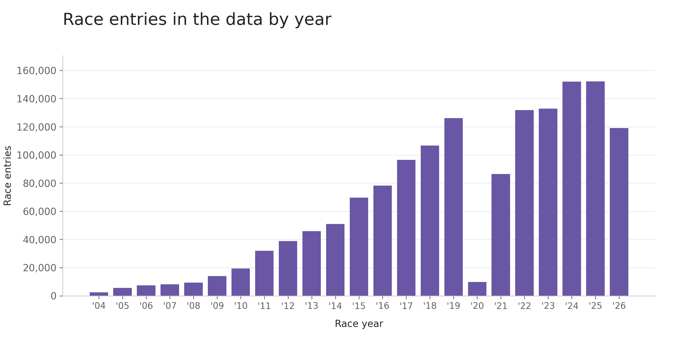
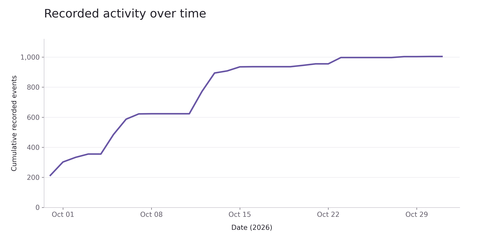
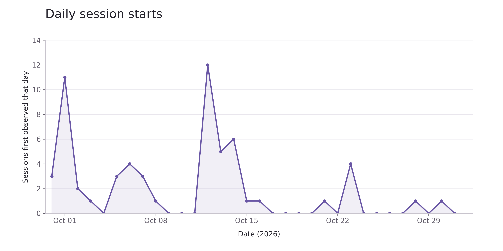
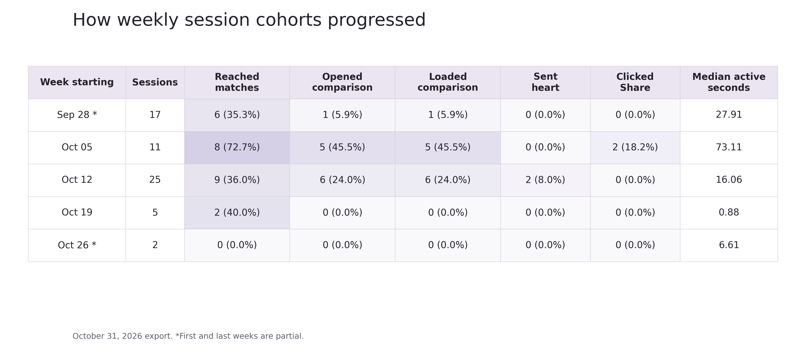
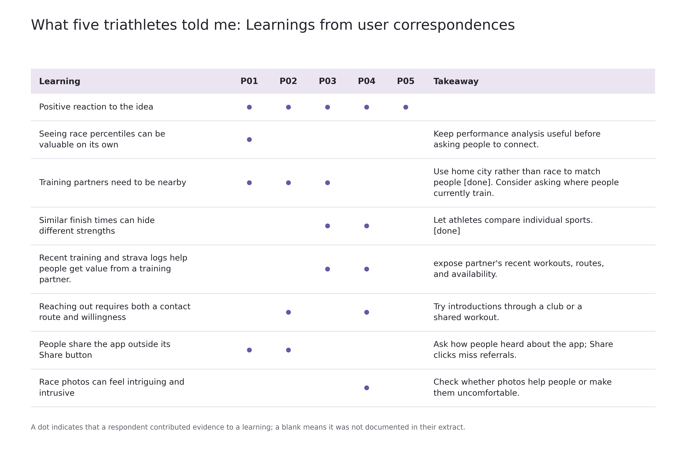

Five article figures, each supplied as a vector PDF and a high-resolution PNG. Usage data comes from the October 31, 2026 export.

Annual counts of archived race entries; these are race years, not collection dates.

1,004 recorded events, including 429 engagement heartbeats; 575 other events.

Daily first-observed session IDs, including dates with zero recorded starts.

Weekly first-observed session cohorts, outcome counts/percentages, and median recorded active time.

Latest approved eight-row table, anonymous P01–P05 labels, positivity row, and one dot/blank note.